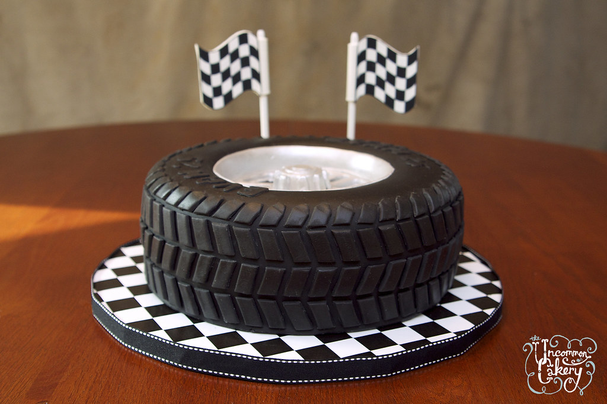

Back to index
Unhealthy Cake

A tempting cake to be eaten with moderation.
Ingredients
- 1x small tyre
- 2x mini mini flags
- 1x rim adapted to the tyre
Steps
- Clean the tyre, dress it on the plate
- Plant the flags in the tyre
- Install the rim and pump air until it looks plumpy
- Serve cold
- Eat with your eyes only